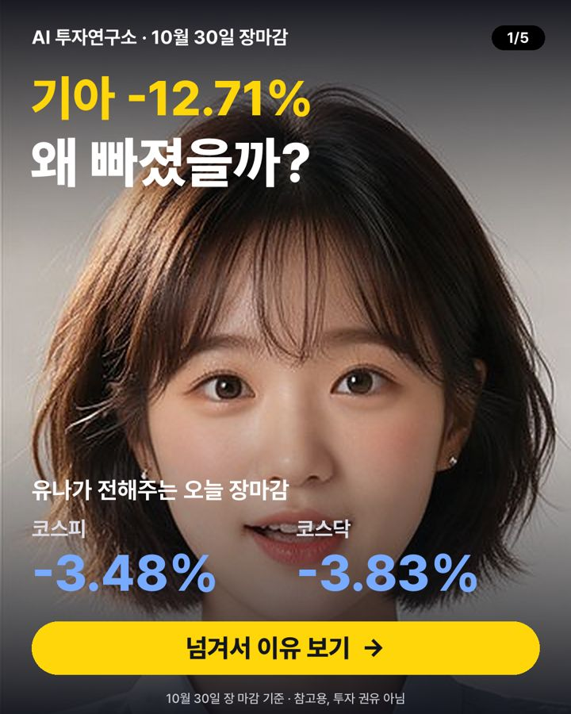

10월 30일 장마감 요약 — 코스피 -3.48%, 코스닥 -3.83%
2026-10-30 장 마감 기준 · 진행 차유나 (차트 분석)

오늘 코스피는 5,730.74로 -3.48%, 코스닥은 724.38로 -3.83% 마감했어요. 대형주 78종목 중 15개가 오르고 62개가 내렸어요. 원/달러 환율은 1,338원이에요.
지수 흐름
| 종가 | 하루 | 1주 | 1달 | |
|---|---|---|---|---|
| 코스피 | 5,730.74 | -3.48% | +7.30% | -13.58% |
| 코스닥 | 724.38 | -3.83% | -1.42% | -11.36% |
많이 오른 종목
- HLB +5.30% · 41,700원
뉴스관련 기사: '美 AI 기술주 쇼크'에 코스피 3%↓…외인 나흘 만에 순매도[시황종합... (뉴스1) - 삼성바이오로직스 +4.68% · 1,432,000원
호재바이오·기술 융합과 공격적 투자·인수 소식이 호재로 작용했어요 - 아모레퍼시픽 +4.14% · 128,200원
호재중국 소비자들의 설화수 재구매가 늘어나 주가가 올랐어요 - HMM +3.33% · 23,250원
호재3분기 영업이익이 크게 늘어날 전망이라 주가가 올랐어요 - 한미약품 +2.91% · 407,000원
호재파브리병 신약 기술수출 계약으로 매출 기대감이 커졌어요
많이 내린 종목
- 기아 -12.71% · 94,800원
악재중국 BYD 급성장으로 기아 한국 점유율이 급락했어요 - 현대건설 -9.99% · 82,000원
뉴스관련 기사: "반전세 산다더니 100억 집주인 됐다"…김동현, 압구정 신현대 매수 (파이낸셜뉴스) - 리노공업 -9.92% · 55,400원
뉴스관련 기사: “아, 코스피”…빅테크 쇼크에 또 털렸다 (한경비즈니스) - 삼성전기 -9.05% · 1,166,000원
호재삼성전기가 글로벌 빅테크와 9000억원 규모의 대규모 적층세라믹커패시터(MLCC) 공급계약을 맺었다. - SK하이닉스 -8.25% · 1,391,000원
악재더스쿠프 주간 증시해설서 한눈에 본 10월 마지막주 시황 급등과 급락 반복한 국내 증시 SK하닉 3분기 어닝 서프라이즈 주주환…
누가 사고 팔았나 (순매수)
| 외국인 | 기관 | 개인 | |
|---|---|---|---|
| 코스피 | -16,149억 원 | +7,540억 원 | +6,028억 원 |
| 코스닥 | -211억 원 | -1,391억 원 | +1,649억 원 |
내일 체크 포인트
- 외국인 흐름 — 오늘 코스피에서 -16,149억 원 순매도
- 국제유가 — 최근 한 달 +13.00%
- 미국 10년 금리 4.93% · 공포지수 VIX 19.4
- 20일 이동평균선 위에 있는 대형주 12/78종목
이 글은 공개된 시세·수급 데이터와 그날 뉴스 제목을 정리한 참고 자료이며 투자 권유가 아닙니다. 시세는 거래소 종가 기준이고, 투자 판단과 결과의 책임은 본인에게 있습니다.